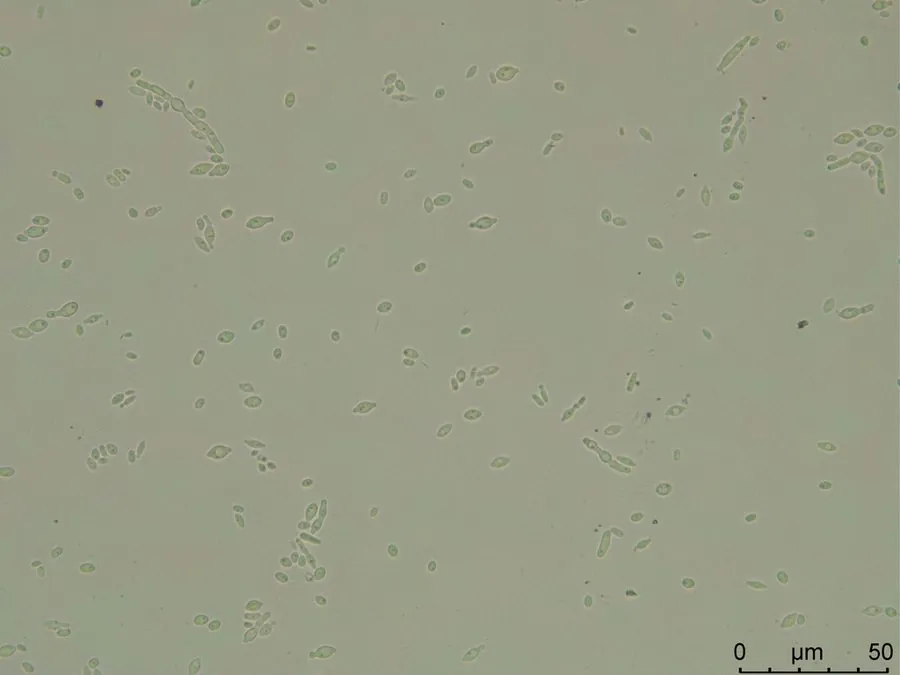

真菌 · 真菌界
葡萄汁有孢汉逊酵母 Hanseniaspora uvarum

葡萄汁有孢汉逊酵母的细胞呈柠檬形、两端尖，是葡萄表面和果汁发酵前期的优势酵母，对葡萄酒香气有重要影响。
- 分类
- 门子囊菌门纲酵母纲目酵母目科酵母科属汉逊酵母属
- 栖息环境
- 葡萄果皮、果园土壤与葡萄汁中，发酵前期大量繁殖
- 地理分布
- 世界性分布，各葡萄产区与果汁中常见
- 保护级别
- 暂无评估（IUCN 未评估，食品微生物）
物种志
葡萄汁有孢汉逊酵母是子囊菌门酵母科的单细胞真菌，细胞呈柠檬形或尖顶形，两端明显变尖，这是它最容易辨认的形态特征。它通过出芽繁殖，菌落乳白色、表面光滑，有性阶段形成子囊，内含 1–4 枚子囊孢子。它属于“非酿酒酵母”，发酵能力较弱，但产酯能力强。
这种酵母广泛存在于葡萄果皮、果园土壤和果汁中，是葡萄汁自然发酵前期的优势菌种。它与酿酒酵母接力发酵：前期大量繁殖，产生酯类、高级醇等香气物质，也产生部分乙酸；随着酒精浓度升高，它逐渐被耐酒精的酿酒酵母取代。适量存在能增加葡萄酒的果香和复杂度，过量则会使酒变酸。此外，它还被研究用于生物防治，抑制葡萄采后的灰霉病。
形态与习性
- 细胞柠檬形，两端尖，故称尖顶酵母
- 繁殖出芽繁殖，形成子囊孢子
- 生态位葡萄果皮与果汁发酵前期
- 发酵特点发酵力弱，产酯能力强
- 对葡萄酒适量增香，过量使酒变酸
- 应用研究用于葡萄采后灰霉病的生物防治
- 分布世界性分布，葡萄产区常见
趣味知识
- 它的细胞是柠檬形的，两端尖尖，在显微镜下一眼就能认出。
- 葡萄汁刚开始发酵时，占优势的往往是它而不是酿酒酵母。
- 它能产生多种酯类，让葡萄酒带有花果香。
- 这种酵母太多时，酒会变酸，所以酿造中要控制它的数量。